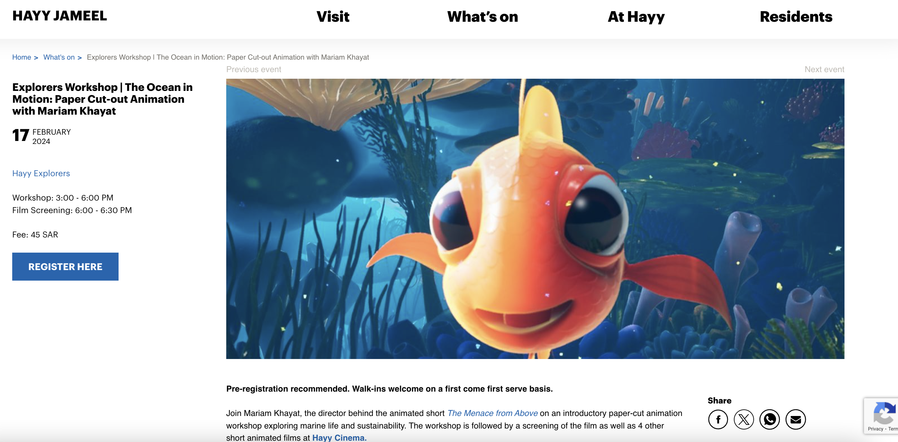
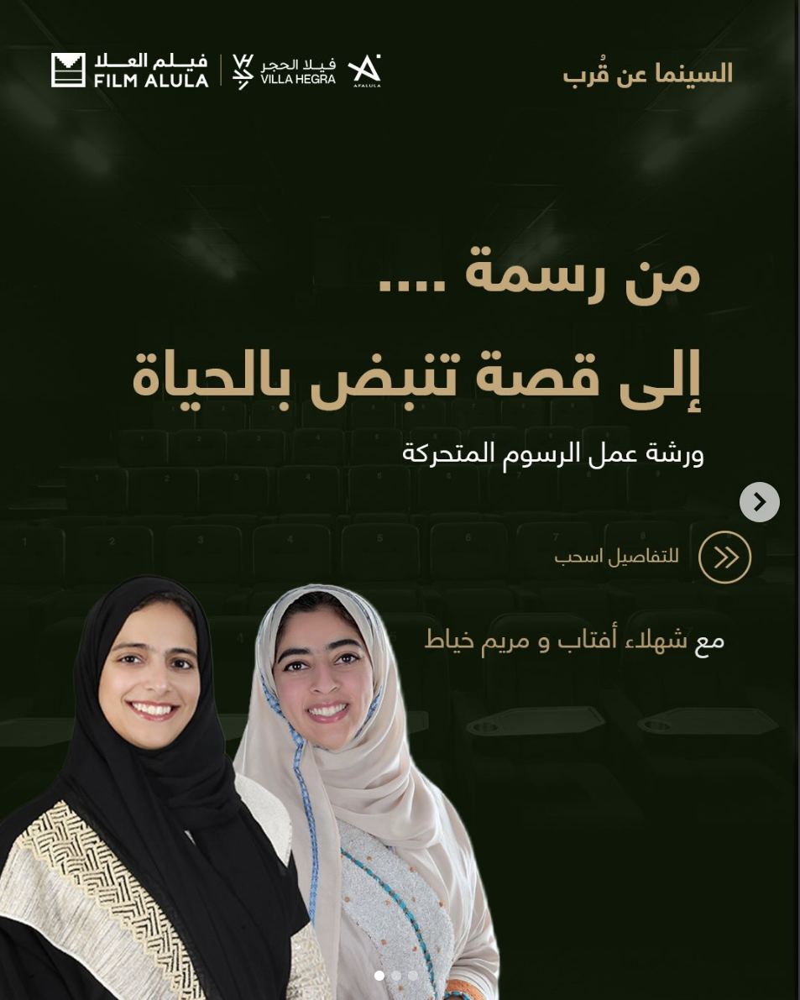

A paper-cutout animation workshop introducing children to storyboarding, animation principles, and creative storytelling — themed around marine life and sustainability, paired with a short film screening.

Planned and presented an interactive animation workshop for the local community in AlUla, covering live animation, voice acting, and screenings. Attracted approximately 155 participants ranging in age from 4 to 70 — the highest-attended week within the first four weeks of the seven-week program.
Designed a stop-motion animation workshop for children, presented during the Saudi Film Confex in Riyadh.
Taught story development and screenplay writing, storyboarding and animatics, stop-motion animation, motion graphics in After Effects and Cinema 4D, the history of motion graphics, and visual effects & compositing.